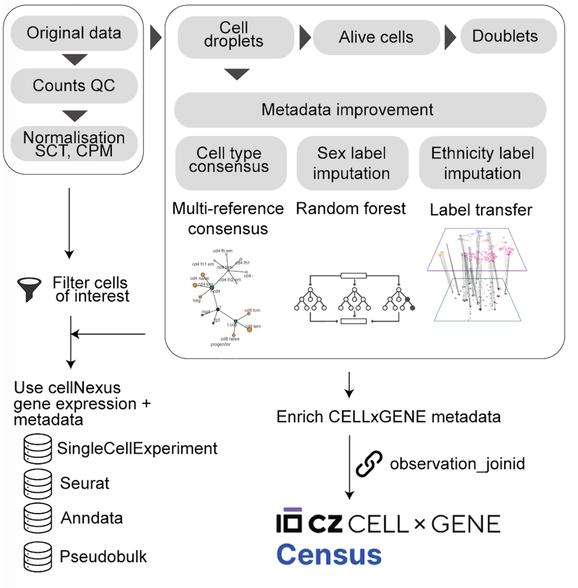
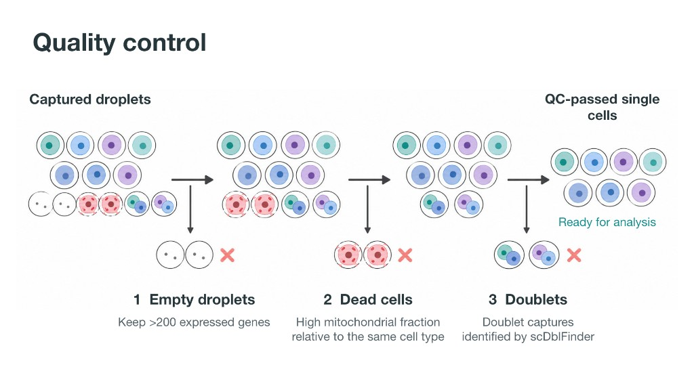
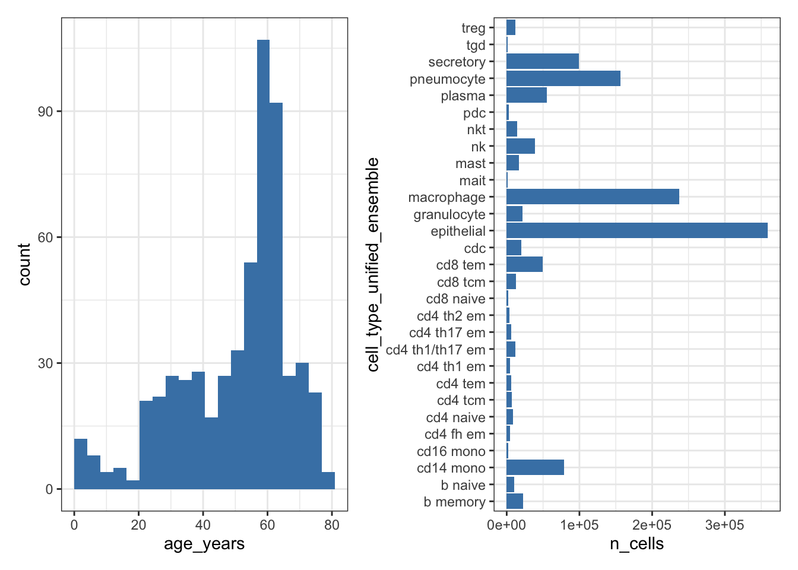

This page is the script for the first block. Run the code in your R session, in order. The figures on this site come from a larger example run, so your own plots can differ when you use the smaller download used in the session.
This article takes Human Cell Atlas data from CELLxGENE. Each study there is a table of measurements, with one row per cell. cellNexus has already spent a large amount of work making those studies usable together. It creates a sample id for each donor with a set of rules, because the original studies do not share one identifier for a person. It prepares each sample and checks data quality. It adds three cell-type labels with SingleR, using the Blueprint, Monaco, and Azimuth references. A harmonisation step then combines those three labels into one unified cell-type label for every cell. The diagram is the detail of that preprocessing, starting from the original CELLxGENE data.

Setup
get_metadata() returns a lazy DuckDB table. Filters stay
in the query until something collects the rows, which is what makes an
atlas of this size practical to subset.
If get_metadata() fails with a parser error that
mentions your cache path, call it with
cache_directory = path.expand("~").
metadata <- get_metadata() |>
keep_quality_cells()
metadatakeep_quality_cells() applies one gate to every sample.
Three kinds of rows are not usable cells, and leaving them in changes
every later result.
- An empty droplet is liquid captured with almost no cell in it. It still produces a few gene measurements, mostly background. Counting it as a cell inflates the number of cells and adds noise.
- A dead cell has broken open. Much of what you then measure comes from the mitochondria, the parts of the cell that make energy, rather than from the genes that say what kind of cell it was.
- A doublet is two cells captured together. Their measurements are mixed, so the row can look like a cell type that does not exist.

The same checks are computed for each sample. Detailed information on the procedure is the cellNexus quality-control steps.
Choose cells by cell type
cell_type_unified_ensemble is the harmonised label
(multi-reference consensus annotation). age_days and
imputed_ethnicity are sample-level fields that travel with
every cell.
metadata |>
dplyr::distinct(cell_type_unified_ensemble) |>
dplyr::arrange(cell_type_unified_ensemble)
metadata |>
dplyr::filter(cell_type_unified_ensemble == "epithelial") |>
dplyr::count(imputed_ethnicity, sort = TRUE)Exercise 1. Count cells per
cell_type_unified_ensemblefor donors older than 50 years (age_days > 50 * 365). Which labels are rare enough that a proportion estimated from 50 cells would be mostly sampling noise?
Solution
library(cellNexus)
library(dplyr)
get_metadata() |>
keep_quality_cells() |>
dplyr::filter(age_days > 50 * 365) |>
dplyr::count(cell_type_unified_ensemble, sort = TRUE)A label with a few dozen cells across the whole atlas will have a very wide composition interval. Drop it from the cell-type list, or accept that its estimate is descriptive.
Choose cells by tissue
This case study uses nine respiratory reference studies. Naming the
dataset_ids keeps the cohort auditable: a later atlas
release cannot silently add a study.
metadata |>
dplyr::filter(dataset_id %in% respiratory_dataset_ids()) |>
dplyr::distinct(dataset_id) |>
dplyr::count()On metadata builds that still contain tissue_groups, the
same idea is a single label, "respiratory system".
annotate_cell_nexus() applies that filter when the column
is present. Current cellNexus tables omit tissue_groups,
and the dataset list above is the tissue definition.
Choose cells by disease
Disease and the fine CELLxGENE tissue label live on the Census observation table. Join them when you want to discover studies by disease. The download is large, so in the room the instructor may run this block while you continue with the pinned respiratory cohort.
get_atlas_versions() tells you which Census snapshot the
atlas was built from. The cellNexus vignette uses Census
2024-07-01; use the census_version that
matches your atlas_id.
get_atlas_versions()
census_metadata <- cellNexus:::get_census_metadata("2024-07-01")
con <- dbplyr::remote_con(metadata)
duckdb::duckdb_register_arrow(con, "census_metadata", census_metadata)
metadata_census <- metadata |>
dplyr::left_join(
dplyr::tbl(con, "census_metadata") |>
dplyr::select(observation_joinid, dataset_id, tissue, disease, sex),
by = c("observation_joinid", "dataset_id")
)
metadata_census |>
dplyr::count(disease, sort = TRUE)get_census_metadata() is an internal cellNexus helper
(:::). The case study below does not need it, because the
nine studies are already selected.
Build the respiratory ageing cohort
Composition uses the immune labels. Expression uses the epithelial labels. Both sets are queried together and split later. Age is restricted to donors from 1 year up to 80 years, which drops perinatal samples and donors who would fall outside the age bins.
The donor is the replicate. Cells from one donor share genotype, processing, and library preparation. A test that treats cells as independent replicates reports a sample size equal to the number of cells (Squair et al. 2021).
cell_types_query <- c(immune_cell_types(), epithelial_cell_types())
obs_lung <- get_metadata() |>
keep_quality_cells() |>
dplyr::filter(
dataset_id %in% respiratory_dataset_ids(),
cell_type_unified_ensemble %in% cell_types_query,
age_days >= 365,
age_days < 80 * 365
) |>
annotate_cell_nexus(min_cells_per_sample = 50)
obs_lung |>
dplyr::count(cell_type_unified_ensemble, name = "n_cells") |>
dplyr::arrange(dplyr::desc(n_cells))annotate_cell_nexus() collects the query, derives the
age variables, drops samples with fewer than 50 cells, and de-duplicates
on observation_joinid. Every cell of every retained sample
is kept. sccomp conditions on each sample’s total, and the
expression model carries library size as a covariate, so equal-size
subsampling would throw away precision.
age_binary is TRUE for donors older than 50
years. age_bin is the same split, labelled for plots. One
encoding means the composition model and the expression model contrast
the same donors. The boundary is a modelling choice: report it, and
check that both sides are populated.
dataset_id values are rewritten with underscores.
Hyphens in a UUID become illegal coefficient names in limma. The filter
above still uses the hyphenated identifiers, because it runs before that
rewrite.
Inspect the cohort before modelling
p_age <- obs_lung |>
dplyr::distinct(sample_id, age_years) |>
ggplot(aes(age_years)) +
geom_histogram(bins = 20, fill = "steelblue") +
labs(x = "Age (years)", y = "Samples")
p_types <- obs_lung |>
dplyr::count(cell_type_unified_ensemble, name = "n_cells") |>
ggplot(aes(cell_type_unified_ensemble, n_cells)) +
geom_col(fill = "steelblue") +
coord_flip() +
labs(x = NULL, y = "Cells")
p_age + p_types & theme_bw()
Exercise 2. How many distinct samples fall in each
age_bin?
Solution
Both bins should contain donors. A bin with a handful of samples
cannot support the age term once dataset_id is in the
model.
Exercise 3. Cross-tabulate distinct samples by
dataset_idandage_binary. Which studies contain donors of both age classes? A study that contains only one class cannot separate age from study, and both models below includedataset_id.
Solution
obs_lung |>
dplyr::distinct(sample_id, dataset_id, age_binary) |>
dplyr::count(dataset_id, age_binary) |>
tidyr::pivot_wider(names_from = age_binary, values_from = n, values_fill = 0)A study with a zero in either age class does not identify an age
effect on its own. The fixed dataset_id term uses the
studies that contain both classes.
Keep this R session open. The next page uses
obs_lung.
Next: Explore and visualise.